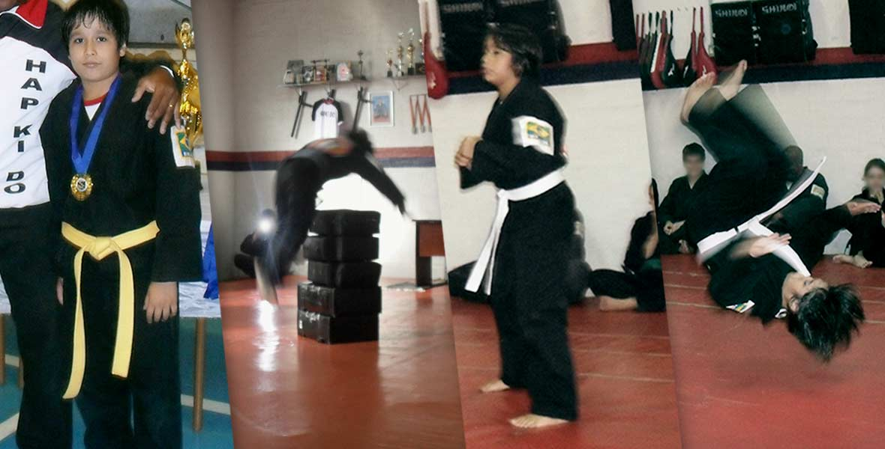
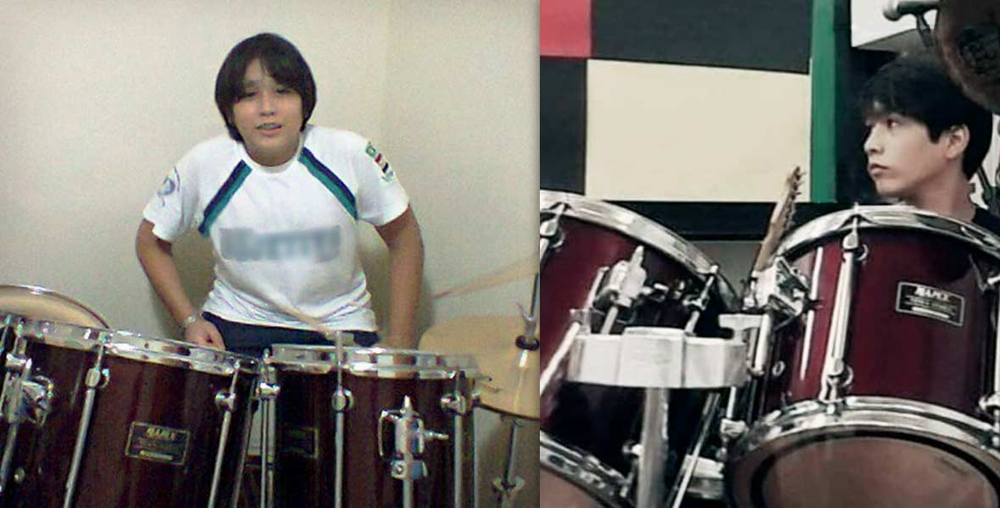
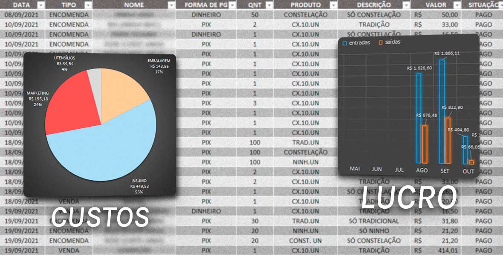

Meu nome é Matheus Luiz "Skilu" Massuda e acredito que somos capazes de ir muito além do que imaginamos.
Desde pequeno, carrego uma crença muito forte comigo: acreditar e seguir em frente, mesmo quando as perspectivas pareçam distantes. A mentalidade de buscar o melhor resultado possível, independente do cenário, é o que me move e, às vezes, tudo o que precisamos é acreditar e tentar um pouco mais (ou de um jeito diferente).
Minha trajetória começou no esporte. Aos 8 anos, no futebol, comecei a entender (ainda que de forma inconsciente) o que significava buscar melhoria contínua, trabalhar em equipe e lidar com vitórias e derrotas de maneira madura. A cada treino e a cada jogo, meu foco era claro: evoluir um pouco mais e aperfeiçoar minha técnica. Sempre que tinha uma oportunidade, praticava. Em casa, transformava a parede e outros acessórios em parceiros de treino, sempre repetindo os fundamentos que aprendia na escola de futebol.
Aos 11 anos, no Hapkido — arte marcial sul-coreana — aprofundei ainda mais meu entendimento sobre foco, autocontrole e disciplina. Eu executava e repetia cada movimento, sempre em busca da precisão técnica e aprimoramento a cada treino. Com essa rotina, entendi o valor da repetição e do treinamento constante para resultados consistentes.
Aos 12 anos, a música passou a ocupar um espaço importante na minha formação. Estudei guitarra e bateria, explorando a conexão entre técnica e expressão. Foi nesse processo que aprendi sobre ritmo, paciência e, principalmente, sobre a importância de repetir, errar e ajustar para evoluir.
Eu era completamente obcecado pela apostila Stick Control: For the Snare Drummer, de George Lawrence Stone (um clássico praticado na caixa da bateria). Foi ela que me ensinou uma lição essencial no aprendizado musical: cada etapa tem seu tempo/momento assim como cada nota tem seu lugar dentro de um compasso. Já o metrônomo, aquele aparelho que muitos músicos iniciantes costumam odiar, acabou se tornando meu maior aliado. Graças a ele, desenvolvi a base rítmica necessária para que cada exercício soasse preciso, dinâmico e musicalmente agradável ao final.
Era incrível e inspirador perceber a evolução acontecendo semana após semana, mês após mês e, com o passar dos anos, ver o quanto aquele esforço constante me transformava.
"Ter consciência de onde queremos chegar é o essencial. Como, descobrimos ao longo do caminho."
Um bom tempo depois, aos 22 anos, depois de trabalhar com gestão estratégica fitness. Abri a Wagashi, meu próprio negócio para angariar fundos e comprar um computador. Aprendi seis receitas diferentes de brigadeiro e montei o conceito de um produto para vender, o resultado foi extraordinário,vendi em 48 minutos 11 caixas que eu havia feito no dia anteior (acredito que além dos brigadeiros serem muito saboroso, também contei um pouco com a sorte).
Depois de vender por três semanas, o fluxo da produção começar a aumentar bastante. Então, criei uma planilha simples para me auxiliar no controle financeiro (eu queria descobrir quanto cada unidade de brigadeiro me custava e se valia a pena continuar por mais um tempo). Paralelamente com as vendas, criei a planilha de controle financeiro - Wagashi onde percebi um lucro de pouco mais de R$ 4.200,00 em cinco meses.
Obs: infelizmente não anotei o histórico de vendas do primeiro mÊs na planilha, (mas lembro que o lucro foi em torno de R$ 1.100).
